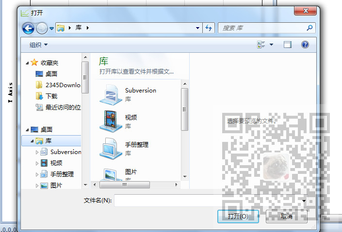
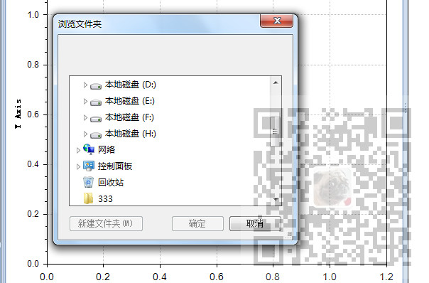

原文出处:本文由博客园博主霸道流氓提供。
原文连接:https://www.cnblogs.com/badaoliumangqizhi/p/11813290.html
原文连接:https://www.cnblogs.com/badaoliumangqizhi/p/11813290.html
场景
通过文件选择对话框选择文件

复制文件到指定路径

注：
博客主页：
https://blog.csdn.net/badao_liumang_qizhi
关注公众号
霸道的程序猿
获取编程相关电子书、教程推送与免费下载。
实现
打开选择文件对话框
OpenFileDialog importOpenFileDialog = new OpenFileDialog();
DialogResult importDialogResult = importOpenFileDialog.ShowDialog();
获取选择文件的路径
string xmlFileName = importOpenFileDialog.FileName;
获取选择文件对话框的点击按钮
DialogResult importDialogResult = importOpenFileDialog.ShowDialog();
if (importDialogResult == DialogResult.Cancel)
{
return;
}
if (importDialogResult == DialogResult.OK)
{
}
选择保存文件目录对话框
FolderBrowserDialog exportDialog = new FolderBrowserDialog();
DialogResult exportDialogResult = exportDialog.ShowDialog();
选择保存文件目录对话框的点击按钮
DialogResult exportDialogResult = exportDialog.ShowDialog();
if (exportDialogResult == DialogResult.OK)
{
}
选择保存文件目录对话框选定的路径
exportPath = exportDialog.SelectedPath;